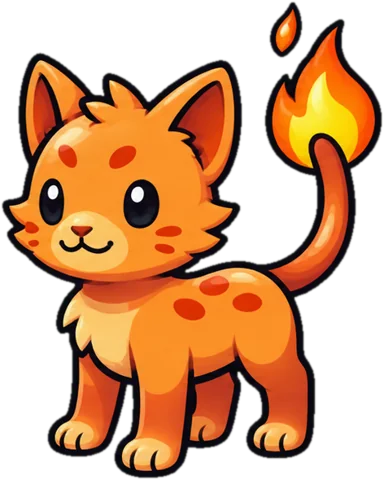

 Fire
Fire Psychic
PsychicTap a stage to read its story.
Blazekit is a small orange kitten with dark fire-spot markings scattered across its coat and a thin tail that ends in a tiny wobbling flame. Its wide curious eyes are deep amber, and it pads around the lava crater on soft round paws that leave faint scorch marks on the warm stone. When something catches its interest, the tail-flame brightens to yellow and the spots on its coat seem to shift position. It has an unnerving habit of staring just past your shoulder as though reading something written in the air behind you.
Field note: Blazekit's tail-flame changes color based on what it is thinking about - yellow for questions, orange for play, red for solutions.
Lava Crater. Blazekit and its family are found in the Lava Crater. See everyone who lives there.
Share a Bond Food that matches its types to become friends. Blazekit loves:
A Bond Food is not a trick. It joins your spirit with the Kimuro's spirit, and only when it chooses you.
Print the Kimuro adventure packs: mazes, cards, a board game and Bond Mark medals.
See the printable packs